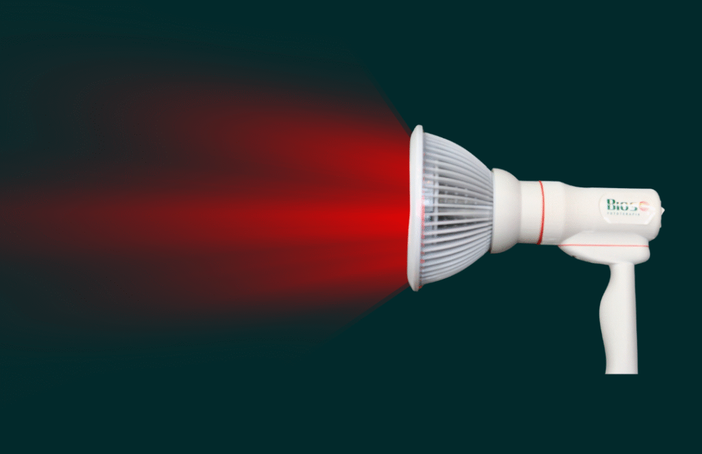
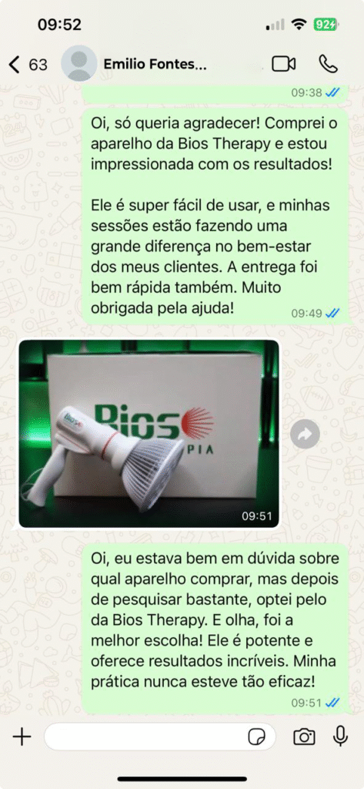
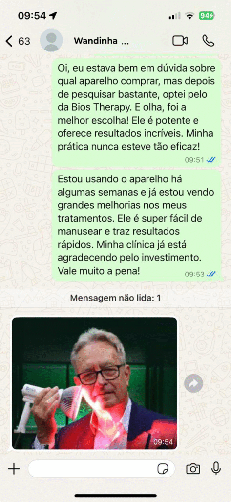
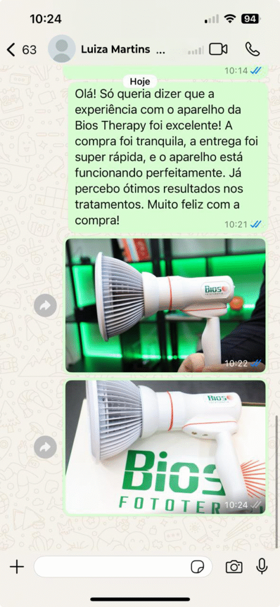
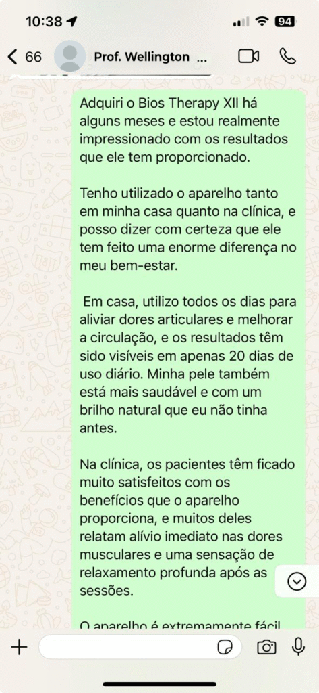
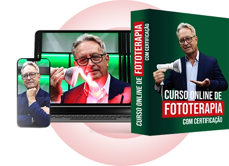
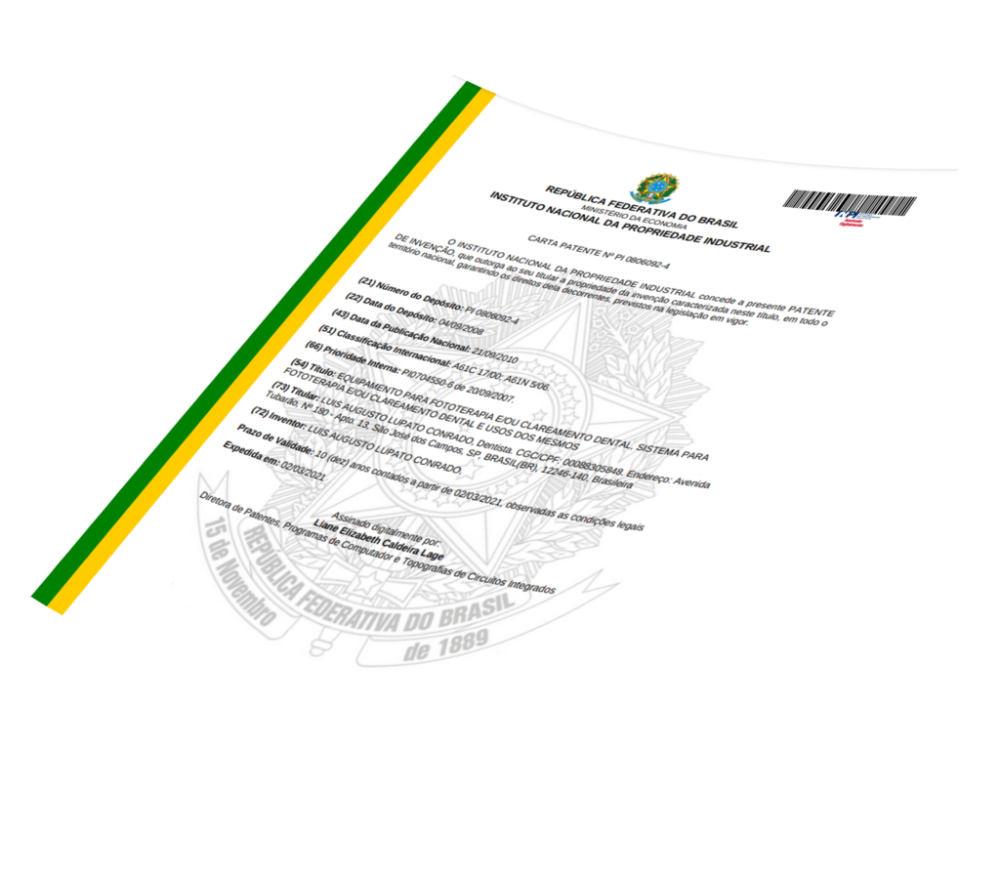
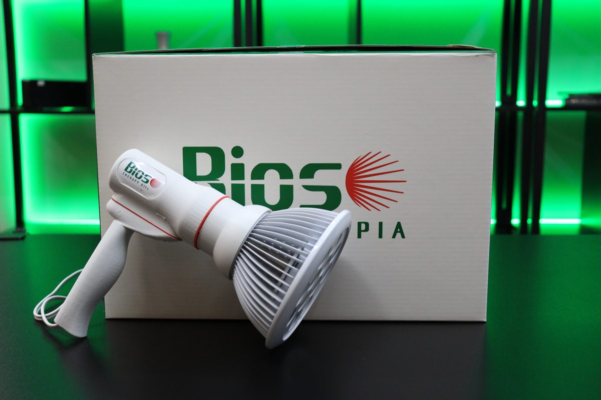
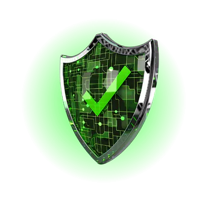

O Bios Therapy XII é a solução de ponta para quem busca alívio para dores crônicas, aceleração de recuperação de lesões e tratamentos eficientes e seguros.
Desenvolvido com a mais avançada tecnologia de fototerapia de LED/laser, o Bios Therapy é indicado tanto para pessoas que buscam melhorar sua saúde e bem-estar, quanto para profissionais da saúde que desejam oferecer aos seus pacientes uma recuperação mais rápida e eficaz.

Conheça o Bios Therapy XII
Um equipamento de Fototerapia laser-LED desenvolvido com base em mais de 30 anos de pesquisa.
Com o principal objetivo de estimular o seu organismo a ter uma autocura.
A ação da luz de LED estimula o próprio organismo a sintetizar hormônios, enzimas e mediadores químicos já existentes que, por falta de estímulos, não são sintetizados.
Um Tratamento único que:
Penetra profundamente na camada da epiderme e derme.
Controla o pH.
Possibilita a Drenagem.
Controla Inflamação e Dor.
Melhora a circulação e oxigenação dos tecidos.
Estimula as mitocôndrias das células a aumentarem o seu metabolismo.
Produz colágeno.
Regenera e cicatriza o tecido em menor tempo.
Reduz medidas.
Controla a flacidez.
Reduz linhas de expressão e rugas.
Suaviza a pele.
Controla a formação de celulite e estrias.
Para Profissionais de Saúde:
Se você é um profissional da saúde, o Bios Therapy é uma tecnologia revolucionária que pode transformar sua prática clínica.
Utilizando fototerapia de LED/laser, ele acelera a regeneração celular, reduz inflamações e promove um alívio duradouro de dores em seus pacientes.
Ele é ideal para diferentes áreas da saúde, incluindo fisioterapia, medicina esportiva, odontologia, dermatologia e geriatria.
Acelera o processo de recuperação de seus pacientes, resultando em tratamentos mais rápidos e eficazes.
Possibilita um aumento no número de atendimentos, já que os pacientes terão recuperação mais rápida e menos necessidade de retornos.
Oferece uma solução não invasiva e sem efeitos colaterais, melhorando a satisfação dos seus pacientes.
Diferencia sua clínica ao oferecer uma tecnologia avançada, reconhecida no Brasil e utilizada por equipes médicas e esportivas.
O Bios Therapy pode ser utilizado em uma ampla gama de tratamentos, incluindo dores crônicas, cicatrização pós-cirúrgica, rejuvenescimento da pele, entre outros.
Para o Público em Geral:
Se você sofre com dores crônicas, lesões ou inflamações, o Bios Therapy foi desenvolvido especialmente para promover alívio duradouro e acelerar a recuperação sem o uso de medicamentos.
Utilizando a poderosa tecnologia de LED/laser, ele estimula a regeneração celular e reduz inflamações, proporcionando alívio rápido e eficaz de forma natural.
Alívio das dores crônicas e articulares, promovendo maior liberdade de movimento.
Aceleração da recuperação de cirurgias e lesões.
Redução de inflamações e alívio das dores musculares e articulares.
Melhora na circulação sanguínea e oxigenação dos tecidos.
Tratamento da flacidez da pele e rejuvenescimento facial.
Efeito comprovado no combate às enxaquecas e dores de cabeça.
O Bios Therapy é totalmente seguro e pode ser utilizado por qualquer pessoa, em qualquer idade, sem efeitos colaterais.
Artigos Científicos
- NASA light-emitting diodes for the prevention of oral mucositis in pediatric bone marrow transplant patients.
- O uso da fototerapia no controle do edema no pós-operatório de cirurgias estéticas.
- Application of phototherapy for the healing of the navels of neonatal dairy calves.
- Ledterapia no controle da inflamação.
- Estudo para tratamento de úlcera por pressão através da Fototerapia com Led.
- Avaliação dos efeitos do laser de baixa potência em úlceras utilizando a fotogrametria e índice de retração.
- Effect of photodynamic therapy on the healing of cutaneous third-degree burn.
- Effect of NASA Light-emitting Diode Irradiation on wound healing.
- Avaliação dos efeitos do LED na cicatrização de feridas cutâneas em ratos wistar.
- Light-emitting Diode phototherapy at 630 ± 3 nm increases local levels of skin-homing T-cells in human subjects.
- The use of hyperbaric oxygen and LEDtherapy in diabetic foot.
- Ledterapia no controle da inflamação.
- Métodos e Aplicações do Plasma Rico em Plaquetas: Uma Revisão.
- Contributions to classification of platelet rich plasma — proposal of a new classification: MARSPILL.
- Platelet Rich Plasma Treatment of Androgenetic Alopecia in Men and Women.
- To evaluate the effect of combining photo-activation therapy with platelet-rich plasma injections for the novel treatment of osteoarthritis.
- Avaliação do efeito do plasma rico em plaquetas fotoestimulado pelo laser de baixa potência no processo de regeneração óssea.
- Inflammatory Interaction Between LIGHT and Proteinase-Activated Receptor-2 in Endothelial Cells.
- Revisão Sistemática da Literatura sobre a efetividade clínica do Plasma Rico em Plaquetas para o Tratamento Dermatológico Estético.
- Stem cell Therapy for idiopathic pulmonary fibrosis: a protocol proposal.
- Regeneration of human bones in hip osteonecrosis and human cartilage in knee osteoarthritis with autologous adipose-tissue-derived stem cells: a case series.
- NASA Light-emitting diodes for the prevention of oral mucositis in pediatric bone marrow transplant patients.
- Antimicrobial photodynamic therapy combined with conventional endodontic treatment to eliminate root canal biofilm infection.
- Aplicação da Terapia Fotodinâmica e Laserterapia em Implantodontia.
- Comparative study among three different phototherapy protocols to treat chemotherapy-induced oral mucositis in hamsters.
- O uso da Ledterapia na mucosite oral: avanços na prevenção e tratamento.
- Photobiomodulation and cancer: what is the truth?
- Terapia LED de baixa intensidade no tratamento da dor durante o movimento ortodôntico.
- Photodiagnosis and photodynamic therapy — review: PDT experience in Brazil, a regional profile.
- Antimicrobial comparison of effectiveness of endodontic therapy and endodontic therapy combined with photo-desinfection on patients with periapical lesion. A 6-month follow up.
- PDT — Photochemical & Photobiological Sciences.
- Aplicação de terapia fotodinâmica e laserterapia em implantodontia.
- Antimicrobial comparison of effectiveness of endodontic therapy and endodontic therapy combined with photo-desinfection on patients with periapical lesion. A 6-month follow up.
- Antimicrobial effects of photodynamic therapy on patients with necrotic pulps and periapical lesion.
- A Fototerapia como uma Alternativa para Alopécia Areata.
- Azul de Metileno e Ativação Mitocondrial.
- Efeitos do Diodo Emissor de Luz (LED) Vermelho na Estimulação de Fibroblastos: ênfase na Reparação Tecidual.
- Laser and led photobiology.
- LED and laser photobiomodulation in the prevention and treatment of oral mucositis: experimental study in hamsters.
- O Uso da Fototerapia no Controle do Edema no Pós-Operatório de Cirurgias Estéticas.
- Terapia LED de baixa intensidade no tratamento da dor durante movimento ortodôntico — Estudo Clínico.
- Mitochondrial respiration as a target for neuroprotection and cognitive enhancement.
Depoimentos




BÔNUS EXCLUSIVO: Curso Online de Fototerapia Clínica e Estética
Ao adquirir o Bios Therapy, você garante 1 ano de acesso completo ao nosso Curso de Fototerapia Clínica e Estética, onde aprenderá a aplicar a fototerapia de forma segura, eficiente e lucrativa nos seus atendimentos.
Isso mesmo: você recebe este curso 100% gratuito na compra do seu Bios Therapy, elevando seus atendimentos ao próximo nível sem pagar nada a mais por isso.
Garanta o seu bônus enquanto está disponível e avance na sua jornada profissional com a fototerapia!
Curso Online de Fototerapia Clínica e Estética

De R$ 1.997,00 porR$ 0,00

Certificado de Patente
Em 2021 Dr. Conrado conquistou sua patente como inventor de equipamentos e sistemas de Fototerapia e/ou Clareamento dental e uso dos mesmos.
A presente invenção refere-se a um sistema para bioestimulação celular, que utiliza pelo menos uma substância contendo pigmentos na cor verde ou azul, a qual forma um filtro apto a receber uma luz vermelha, advinda de um equipamento contendo uma fonte de luz do tipo LED (light emitting diode) de cor vermelha.
A referida fonte de luz é obtida através de um equipamento emissor de luz contendo um grupo de LEDs vermelhos, os quais possuem o comprimento de onda de 630nm podendo compreender também na faixa de 600nm a 780nm, com potência podendo variar entre 1 a 999 mW. O sistema e equipamento de acordo com a presente invenção são eficazes no clareamento dentário ou no tratamento de diversas afecções do corpo humano ou animal.
O equipamento apresenta baixo custo, agregando requisitos de economia, segurança e conforto, reafirmando sua praticidade utilitária, dando aos usuários pacientes, inúmeras possibilidades e benefícios, tornando-se de grande expectativa para o seguimento.
O Bios Therapy foi desenvolvido pelo Dr. Luís Augusto Conrado, um dos maiores especialistas em engenharia biomédica, com mais de 30 anos de experiência em biotecnologia.
Seu trabalho foi fundamental para a criação desse equipamento de alta tecnologia, que é validado por décadas de pesquisa científica.
A tecnologia está disponível para você adquirir agora e transformar sua saúde ou a prática de sua clínica, com resultados visíveis em poucos dias.
Não perca a oportunidade de vivenciar os benefícios do Bios Therapy!
COMPRE AGORA E TRANSFORME SUA SAÚDE OU PRÁTICA CLÍNICA:

Clique no botão abaixo para encomendar o seu Bios Therapy.
De R$ 5500,00 por apenas
12x de R$ 573,64
ou R$ 5.300,00 [À Vista no PIX]
QUERO COMPRAR

Como sei que estou comprando um produto original e seguro?
Em 2021, o Dr. Conrado conquistou sua patente como inventor de equipamentos e sistemas de Fototerapia e/ou Clareamento dental e uso dos mesmos.
A presente invenção refere-se a um sistema para bioestimulação celular, que utiliza pelo menos uma substância contendo pigmentos na cor verde ou azul, a qual forma um filtro apto a receber uma luz vermelha, advinda de um equipamento contendo uma fonte de luz do tipo LED (light emitting diode) de cor vermelha.
A referida fonte de luz é obtida através de um equipamento emissor de luz contendo um grupo de LEDs vermelhos, os quais possuem o comprimento de onda de 630nm podendo compreender também na faixa de 600nm a 780nm, com potência podendo variar entre 1 a 999 mW. O sistema e equipamento de acordo com a presente invenção são eficazes no clareamento dentário ou no tratamento de diversas afecções do corpo humano ou animal.
O equipamento apresenta baixo custo, agregando requisitos de economia, segurança e conforto, reafirmando sua praticidade utilitária, dando aos usuários pacientes, inúmeras possibilidades e benefícios, tornando-se de grande expectativa para o seguimento.
Perguntas Frequentes